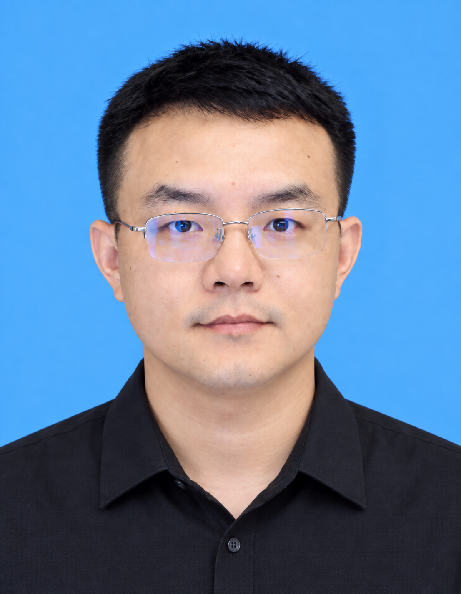

王飞 · Fei Wang
副教授 · 硕士生导师 | Associate Professor · Master Supervisor
曲阜师范大学数学科学学院 | School of Mathematical Sciences, Qufu Normal University

个人简介 | Profile
博士，2018年1月毕业于江南大学。主要围绕网络系统动力学、协同控制与智能优化开展研究，涉及复杂动态网络、多智能体系统、分数阶与反应扩散系统、分布式优化、强化学习与最优控制等方向。先后主持中国博士后科学基金、山东省自然科学基金青年基金和面上项目、教育部重点实验室开放课题等，并参与国家自然科学基金面上项目、山东省自然科学基金项目及山东省高等学校青创人才引育计划团队等。
研究方向 | Research Interests
- 网络系统的协同控制与分布式优化
- 分数阶与时空网络系统动力学
- 强化学习与最优控制
教育与工作经历 | Education & Appointment
2018.01江南大学，博士
2018.01–至今曲阜师范大学数学科学学院
代表性论文 | Selected Publications
- F. Wang, Y. Wei, C. Zhang, N. Li. Hierarchical optimal synchronization for heterogeneous nonlinear dynamical network systems with input saturation via reinforcement learning. IEEE Transactions on Control of Network Systems, 2026.
- F. Wang, Y. Wei, C. Zhang, Z. Wang. Observer-based two-point intermittent boundary control for the reaction diffusion systems. IEEE Transactions on Automation Science and Engineering.
- S. Hu, F. Wang*, N. Li. Inverse reinforcement learning for optimal consensus in input-delay multiagent systems with saturating actuators. International Journal of Robust and Nonlinear Control, 2026.
- J. Guo, F. Wang*, Y. Wei, C. Zhang. Secure multi-synchronization of heterogeneous dynamical networks with deception attacks via event-triggered impulsive control. Communications in Nonlinear Science and Numerical Simulation, 2025.
完整第一/通讯作者论文列表见：publications.html
教学 | Teaching
本科课程
- 高等数学
- 解析几何
- 常微分方程
- 微分方程数值解
- 离散数学
研究生课程
- 线性系统理论
- 非线性系统理论
- 最优化方法
代表性教学成果 | Selected Teaching Achievements
- 山东省研究生优质课程《非线性系统理论》
- 山东省课程思政示范课程《常微分方程》
- 曲阜师范大学校级“金课堂”《常微分方程》
- 曲阜师范大学教学成果二等奖（首位）
- 全国高校数学微课程设计竞赛华东赛区一等奖、山东省一等奖
- 参与国家级一流本科课程《常微分方程》（排名4）
- 参与山东省教学成果奖一等奖（排名5）
学生培养 | Student Mentoring
指导学生在全国大学生数学建模竞赛、全国研究生数学建模竞赛、全国大学生统计建模大赛以及师范生教学技能竞赛中获国家级、省级奖励多项；已指导硕士研究生完成复杂网络同步、多智能体系统、参数识别、输入约束最优控制和模糊神经网络等方向的学位论文。